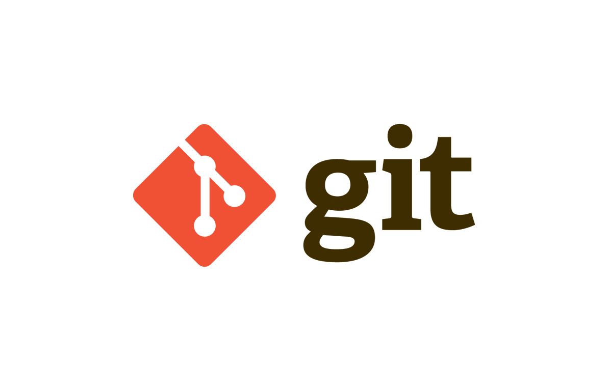
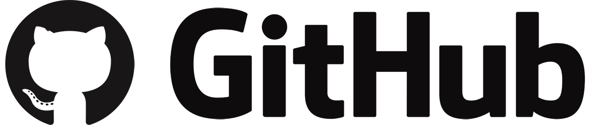

Git y GitHub
- Git 
- Git es un proyecto de código abierto maduro y con un mantenimiento activo que desarrolló originalmente Linus Torvalds, el famoso creador del kernel del sistema operativo Linux, en 2005. Un asombroso número de proyectos de software dependen de Git para el control de versiones, incluidos proyectos comerciales y de código abierto. Los desarrolladores que han trabajado con Git cuentan con una buena representación en la base de talentos disponibles para el desarrollo de software, y este sistema funciona a la perfección en una amplia variedad de sistemas operativos e IDE (entornos de desarrollo integrados).
- GitHub 
- Github es un portal creado para alojar el código de las aplicaciones de cualquier desarrollador, y que fue comprada por Microsoft en junio del 2018. La plataforma está creada para que los desarrolladores suban el código de sus aplicaciones y herramientas, y que como usuario no sólo puedas descargarte la aplicación, sino también entrar a su perfil para leer sobre ella o colaborar con su desarrollo.